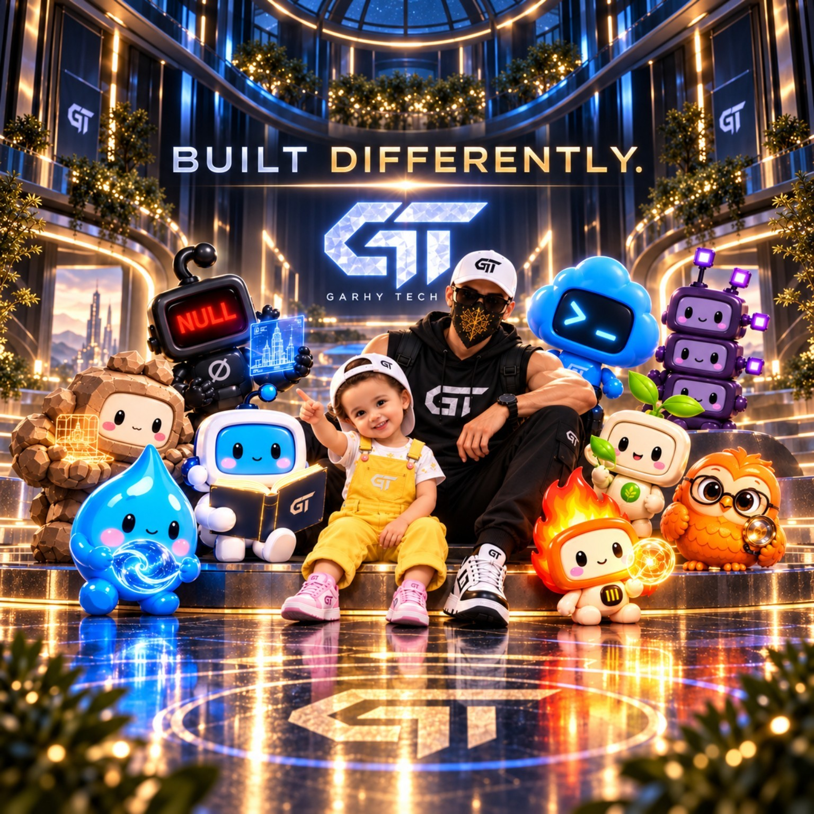
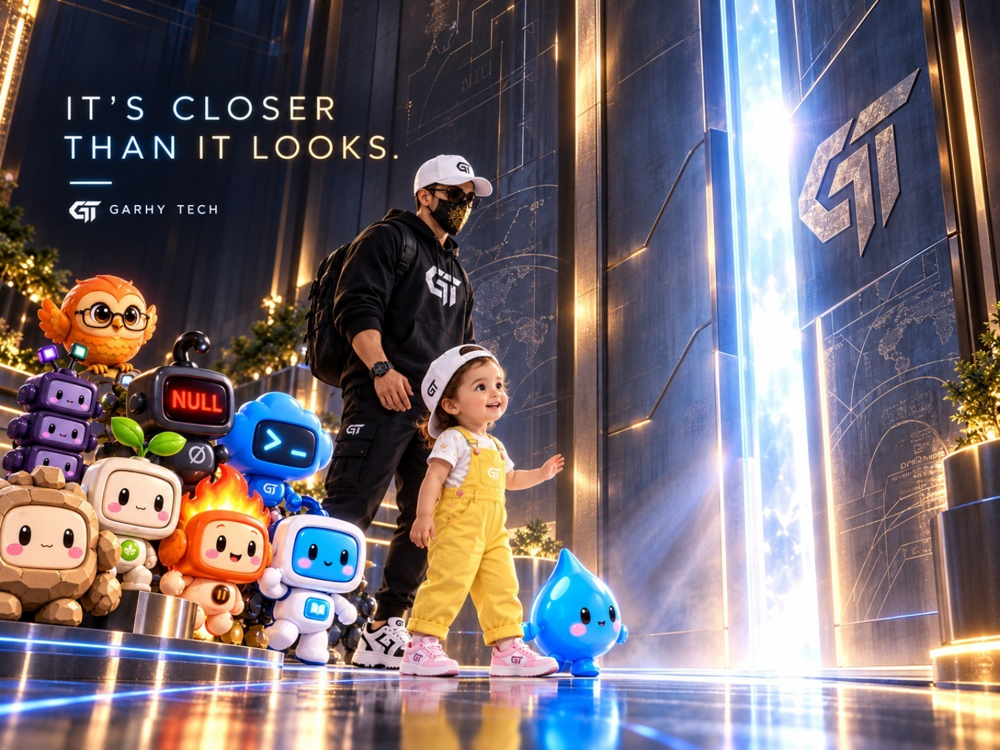
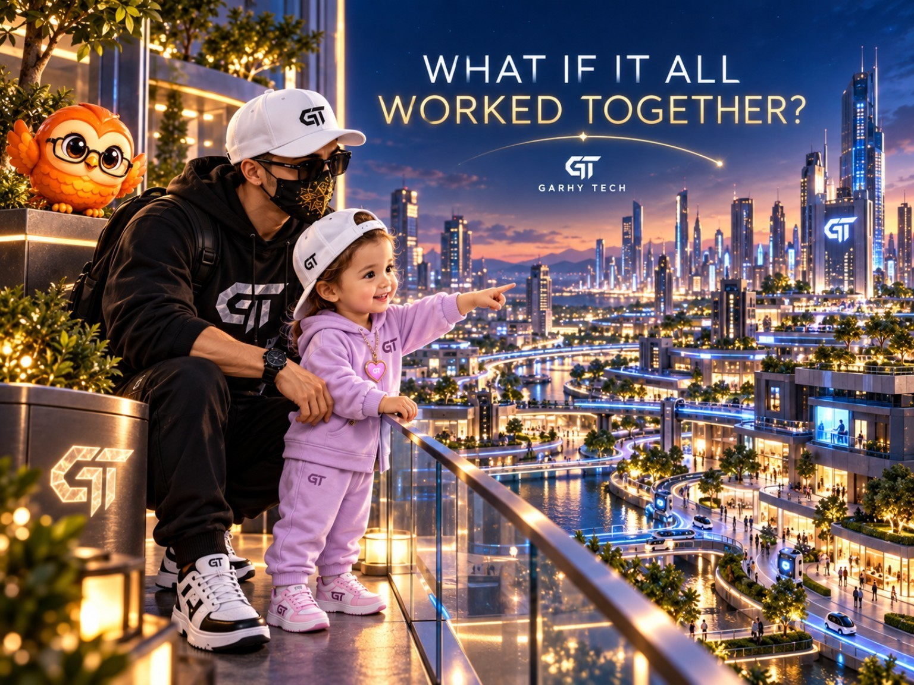

EXPERIENCE PLANE
GARHY TECH · HANA · Store · GT.BYBIT
Customer-facing and public product surfaces.
INDEPENDENT THINKING. CONNECTED POSSIBILITIES.
Software, intelligent automation and a shared visual world. Shaped by engineering. Grounded in people.
AHMED EL GARHY FOUNDER
01 / THE VISUAL WORLD
THE PEOPLE. THE PERSONALITIES.
The founder, HANA and the characters come together in the original campaign artwork.
Blue brings precision. Gold brings warmth. Every character keeps its own identity.

02 / THE THRESHOLD
Light, scale and anticipation.


04 / THE VISUAL SIGNATURE
GT anchors the visual world. Dark metal and platinum give the original mark two distinct material expressions.
Proposed colour direction inspired by the supplied artwork.
05 / ENGINEERING IN VIEW
The visual world above is campaign artwork.
The engineering signals below come from the published public data.
Public snapshots of deployment state, reachability, SLO proxies and dependency impact. The diagnostics use published engineering data. Private service telemetry and production controls remain outside this public site.
Founder & Developer of GARHY TECH and the GT application ecosystem. Professionally known as Ahmed Elgarhy.
Public reachability SLO proxy. Private service-level SLOs require server-side telemetry.
Machine-readable dependency model with bounded blast-radius analysis.
Customer-facing and public product surfaces.
Identity, API and shared capability boundaries.
Source, CI/CD and production delivery.
The public plane never mutates production. High-impact, destructive, financial and identity changes remain human-controlled behind a private operator plane.
Deterministic diagnostics grounded only in loaded public telemetry. No free-form production actions.
OpenTelemetry-compatible public contract with server-side-only ingestion boundary.
Registry, telemetry, observer, SLO, impact, forecast, incidents, topology, policies and change intelligence are separated into machine-readable documents.

help, status, diagnose, systems, deployments, slo, impact, forecast, incidents, change, topology, policy, fabric, freshness, data, hana, store, bybit, api, id, github, company, clear